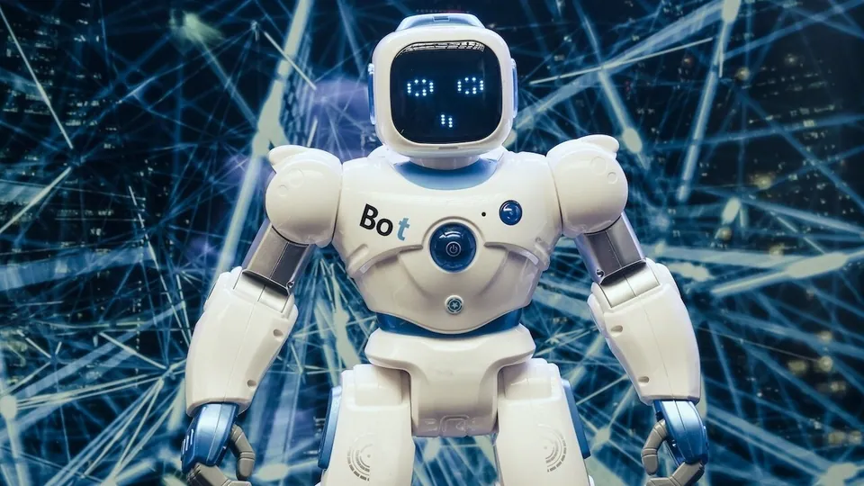

Top headlines

Nathan Lyon ruled out of Ashes after suffering 'significant calf tear' in Australia's second Test win over England
Nathan Lyon has been ruled out of the remainder of The Ashes series after suffering a "significant calf tear" during the second Test match at Lord's. Lyon suffered the injury while fielding on day two of the second Test at Lord's, which his side won in thrilling fashion to open up a 2-0 series lead.

OpenAI's new control AI team, Elon Musk praises China and more
Elon Musk believes China is in a strong position when it comes to the development of artificial intelligence and that the country will be “great at anything it puts its mind to.” In remarks delivered by video on Thursday to the World Artificial Intelligence Conference, which is being held in Shanghai, the Tesla CEO did not hold back when it came to praising certain aspects of the world's second-largest economy.
Musk has significant business interests in China. Tesla sells its electric cars there and runs a major factory in Shanghai. In May, he met with China's Foreign Minister, Qin Gang. In the past, he has praised Chinese automakers, describing them as “most competitive in the world.” In 2020 he said “China rocks, in my opinion.”